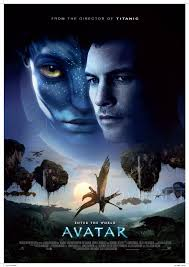

MOVIE G@LLERY

Avatar
On the lush alien world of Pandora live the Na'vi, beings who appear primitive but are highly evolved.
Because the planet's environment is poisonous, human/Na'vi hybrids, called Avatars, must link to human minds
to allow for free movement on Pandora.
Release Date:18 December 2009
Director:James Cameron
Cast:Sam Worthington,Zoe Sald
Language:English
Rating IMDB:7.8/10

Interstellar
Professor Brand send former NASA pilot Cooper and a
team of researchers through the wormhole and across the galaxy to find out which of three planets could
be mankind's new
home.
Release Date:7 November 2014
Director: Christopher Nolan
Cast:Matthew McConaughey,Jessica Chastain
Language:English
Rating IMDB:8.6/10

John Wick
Legendary assassin John Wick retired from his violent career after marrying the love of
his life. When sadistic mobster Iosef Tarasov and his
thugs steal John's prized car and kill the puppy.
Release Date: 14 November 2014
Director: Chad Stahelski
Cast:Keanu Reeves,Michael Nyqvist
Language:English
Rating IMDB:7.4/10

The Dark Knight
Batman has been able to keep a tight lid on crime
in Gotham City. But when a vile young criminal calling the Joker suddenly throws the town into chaos.
Release Date:18 July 2008
Director: Christopher Nolan
Cast:Christian Bale,Michael Caine
Language:English
Rating IMDB:9/10